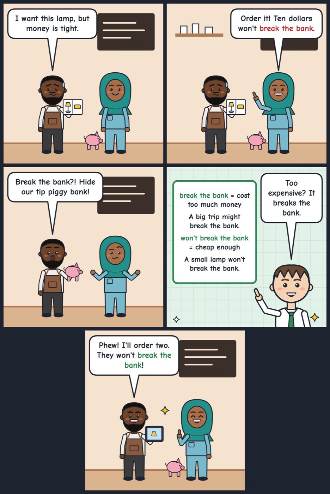

break the bank
To cost too much money or be more expensive than you can afford.
A small gift won't break the bank.
Tip: Usually used in the negative or in questions: 'It won't break the bank' means it's affordable, and 'break the bank' alone often sounds like a worry about cost.
Hear it in conversation
Workbook
1. What does it mean?
In this conversation, what does 'break the bank' mean?
2. Fill the gap
We booked a cheap hotel near the station, so the weekend away didn't .
3. Choose the best reply
Olena: Are you going to get the new laptop for your course?
4. Your turn: speak
Tell me about a time you wanted to buy something or do something but had to think carefully about the cost.
Show an example answer
Last year I wanted to take a short city break with friends, but I was saving for a new phone. I looked for cheap flights and a simple apartment to share, so in the end the trip didn't break the bank, and we still had a great time.
Answer key: break the bank
- 1. B. Cost more money than you can comfortably afford
- 2. break the bank
- 3. C. Yes, I found a good one on sale, so it won't break the bank.
- 4. Example: Last year I wanted to take a short city break with friends, but I was saving for a new phone. I looked for cheap flights and a simple apartment to share, so in the end the trip didn't break the bank, and we still had a great time.
See it in a comic
